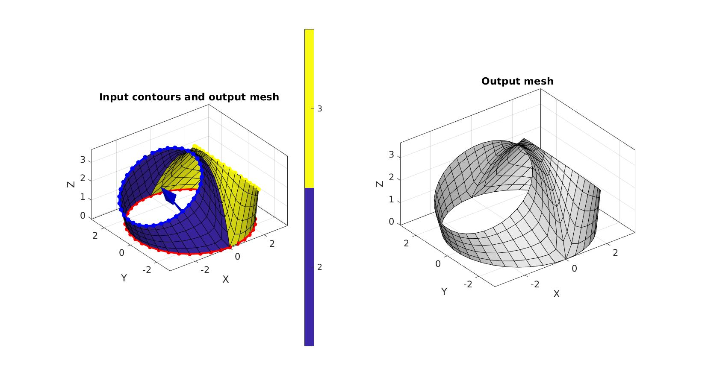
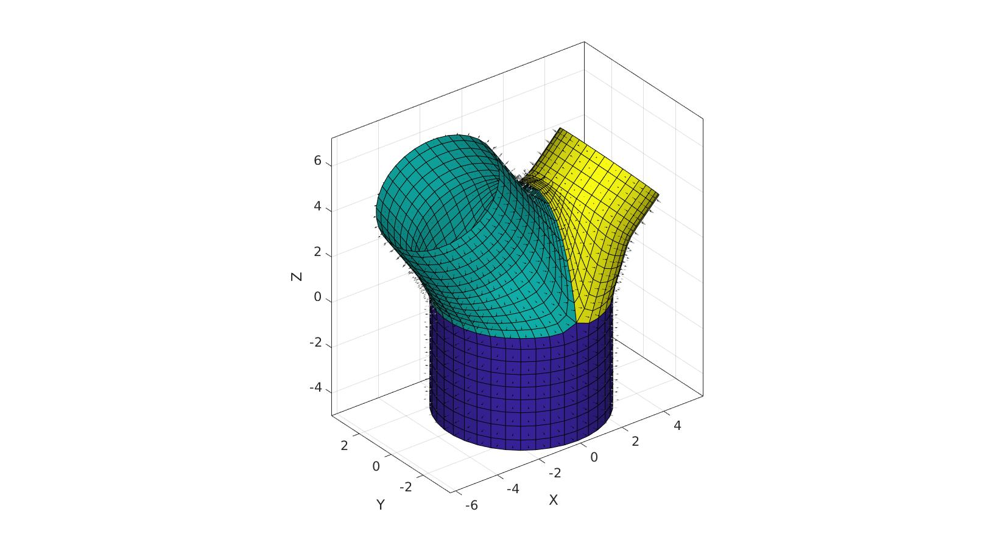
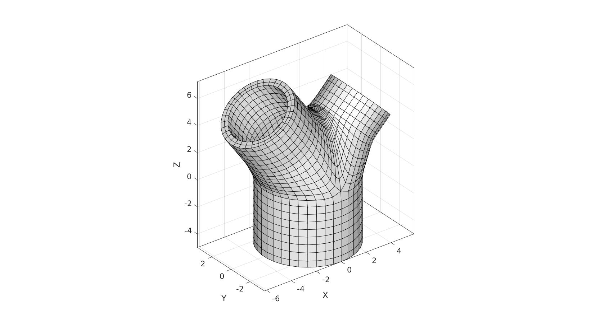

DEMO_mesh_bifurcation_angle_control
This demo shows the use of the splitCurveSetMesh function to parameterise a bifurcation in terms of vessel directions and diameters.
Contents
clear; close all; clc;
PLOT SETTINGS
fontSize=15; lineWidth=3; markerSize1=25;
Control parameters
r1_inner=3; r=(0.5*r1_inner^3)^(1/3); r2_inner=r*0.9; r3_inner=r*0.75; pointSpacingMain=0.5; V1_origin=[0 0 0]; %Origin of first circle bifurcationAngleDeg2=35; bifurcationAngleDeg3=-45; bifurcationDistance2=4; bifurcationDistance3=4; height1=5; height2=3; height3=2; nSmoothBifurcation=50; %Number of Laplacian/HC smoothing steps splitMethod='ortho'; %'nearMid'; %Saddle placement saddleArcHeightFactor=1; %1=saddle arcs upward to max height, 0 means saddle is in plane of first circle nSmoothFinal=50; %Number of Laplacian/HC smoothing steps wallThickness=0.5; numElementsWall=2;
Derived metrics
nz=[0 0 1]; %Normal direction for z-axis R2=euler2DCM([0 (bifurcationAngleDeg2/180)*pi 0]); %Rotation matrix for first direction R3=euler2DCM([0 (bifurcationAngleDeg3/180)*pi 0]); %Rotation matrix for second direction n2=nz*R2; %Direction vector for first branch n3=nz*R3; %Direction vector for second branch V2_origin=n2.*bifurcationDistance2; %Origin of second circle V3_origin=n3.*bifurcationDistance3; %Origin of third circle %Number of points to use allong circle 1 np=ceil((2*pi*r1_inner)./pointSpacingMain); np=np+~iseven(np); %Forcing this even creates symmetric saddle position %Number of steps from first circle to set of branch circles numStepsBranch=ceil((bifurcationDistance2+bifurcationDistance3)/2./pointSpacingMain);
Create curves
Building outer radius here as thickening direciton is inwards.
% Circle 1 t=linspace(2*pi,0,np+1)'; t=t(1:end-1); x=(r1_inner+wallThickness).*sin(t(:)); y=(r1_inner+wallThickness).*cos(t(:)); z=zeros(size(t)); V1=[x y z]; V1=V1+V1_origin; % Circle 2 x=(r2_inner+wallThickness).*sin(t); y=(r2_inner+wallThickness).*cos(t); z=zeros(size(x)); V2=[x y z]*R2; V2=V2+V2_origin+V1_origin; % Circle 3 x=(r3_inner+wallThickness).*sin(t); y=(r3_inner+wallThickness).*cos(t); z=zeros(size(t)); V3=[x y z]*R3; V3=V3+V3_origin+V1_origin;
Meshing bifurcation
V_cell={V1,V2,V3};
patchType='quad';
smoothPar.Method='HC';
smoothPar.n=nSmoothBifurcation;
[Fb,Vb,curveIndices,Cb]=splitCurveSetMesh(V_cell,numStepsBranch,patchType,smoothPar,splitMethod,saddleArcHeightFactor);
Visualization
cFigure; subplot(1,2,1); hold on; title('Input contours and output mesh','FontSize',fontSize); gpatch(Fb,Vb,Cb); plotV(Vb(curveIndices{1},:),'r.-','MarkerSize',markerSize1,'LineWidth',lineWidth); plotV(Vb(curveIndices{2},:),'b.-','MarkerSize',markerSize1,'LineWidth',lineWidth); plotV(Vb(curveIndices{3},:),'y.-','MarkerSize',markerSize1,'LineWidth',lineWidth); quiverVec(V1_origin,n2,bifurcationDistance2,'b') quiverVec(V1_origin,n3,bifurcationDistance3,'y') axisGeom(gca,fontSize); colormap parula; icolorbar; camlight headlight; subplot(1,2,2); hold on; title('Output mesh','FontSize',fontSize); gpatch(Fb,Vb,'w','k'); axisGeom(gca,fontSize); camlight headlight; drawnow;
Extrude ends
cPar.numSteps=ceil(height1./pointSpacingMain); cPar.depth=height1; cPar.patchType='quad'; cPar.dir=1; cPar.n=[0 0 -1]; cPar.closeLoopOpt=1; [Fm,Vm]=polyExtrude(Vb(curveIndices{1},:),cPar); Fm=fliplr(Fm); pointSpacing2=mean(diff(pathLength(Vb(curveIndices{2},:)))); cPar.numSteps=ceil(height2./pointSpacing2); cPar.depth=height2; cPar.patchType='quad'; cPar.dir=1; cPar.n=n2; cPar.closeLoopOpt=1; [Fb1,Vb1]=polyExtrude(Vb(curveIndices{2},:),cPar); Fb1=fliplr(Fb1); pointSpacing3=mean(diff(pathLength(Vb(curveIndices{3},:)))); cPar.numSteps=ceil(height3./pointSpacing3); cPar.depth=height3; cPar.patchType='quad'; cPar.dir=1; cPar.n=n3; cPar.closeLoopOpt=1; [Fb2,Vb2]=polyExtrude(Vb(curveIndices{3},:),cPar); Fb2=fliplr(Fb2);
Join and merg
[F,V,C]=joinElementSets({Fm,Fb,Fb1,Fb2},{Vm,Vb,Vb1,Vb2},{ones(size(Fm,1),1),Cb,2*ones(size(Fb1,1),1),3*ones(size(Fb2,1),1)});
[F,V]=mergeVertices(F,V);
Smoothen
smoothPar2.Method='HC';
smoothPar2.n=nSmoothFinal;
smoothPar2.RigidConstraints=unique(patchBoundary(F));
V=patchSmooth(F,V,[],smoothPar2);
Visualization
cFigure; hold on; gpatch(F,V,C,'k'); patchNormPlot(F,V); % gpatch(Fb,Vb,'w','k'); % patchNormPlot(Fb,Vb); % gpatch(Fm,Vm,'w','k'); % patchNormPlot(Fm,Vm); % gpatch(Fb1,Vb1,'w','k'); % patchNormPlot(Fb1,Vb1); % gpatch(Fb2,Vb2,'w','k'); % patchNormPlot(Fb2,Vb2); axisGeom(gca,fontSize); camlight headlight; drawnow;
[E,V]=patchThick(F,V,-1,wallThickness,numElementsWall); FE=element2patch(E);
Visualization
cFigure; hold on; gpatch(FE,V,'w','k'); axisGeom(gca,fontSize); camlight headlight; drawnow;

GIBBON www.gibboncode.org
Kevin Mattheus Moerman, gibbon.toolbox@gmail.com
GIBBON footer text
License: https://github.com/gibbonCode/GIBBON/blob/master/LICENSE
GIBBON: The Geometry and Image-based Bioengineering add-On. A toolbox for image segmentation, image-based modeling, meshing, and finite element analysis.
Copyright (C) 2006-2021 Kevin Mattheus Moerman and the GIBBON contributors
This program is free software: you can redistribute it and/or modify it under the terms of the GNU General Public License as published by the Free Software Foundation, either version 3 of the License, or (at your option) any later version.
This program is distributed in the hope that it will be useful, but WITHOUT ANY WARRANTY; without even the implied warranty of MERCHANTABILITY or FITNESS FOR A PARTICULAR PURPOSE. See the GNU General Public License for more details.
You should have received a copy of the GNU General Public License along with this program. If not, see http://www.gnu.org/licenses/.